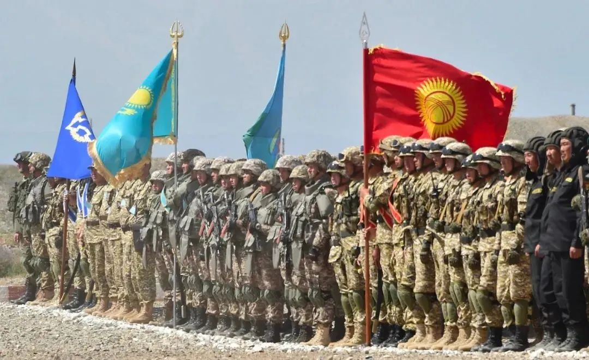

收录于合集 #俄罗斯 2个

作品简介
作者 ： 季莫费·博尔达切夫（Тимофей Бордачёв），俄罗斯高等经济大学欧洲与世界研究中心研究员、“瓦尔代”国际辩论俱乐部项目主任、华东师范大学俄罗斯研究中心基地重大项目合作者。
翻译： 班捷，华东师范大学俄语系教师。
来源 ： 《俄罗斯研究》，2021年第3期。

文章导读
1月2日以来，哈萨克斯坦因燃油涨价事件爆发大型抗议活动，最终俄罗斯选择在集体安全条约组织框架下派兵援助哈萨克斯坦稳定局势。近年来，俄罗斯周边形势突变，发生在白俄罗斯、吉尔吉斯斯坦、纳卡等地的动荡，引发了人们对于俄罗斯如何反应、作何考虑的重点关注。
本文作者指出，俄罗斯对于周边地区仍然高度关注，但是重点不同， 白俄罗斯与哈萨克斯坦的地理位置决定了这两个国家的安危与走向，直接关乎俄罗斯的核心利益 ；其他周边国家和地区的发展态势，对俄罗斯则不具有同等的意义。作者认为，自乌克兰危机以来，俄罗斯对周边地区的外交政策和行动，已经发生了改变，不是帝国式对周边事务到处插手的做法，而是 根据自身的利益考量，有选择地、以不同的参与程度加以应对 。 俄罗斯权衡自身目前的实力与利益，在处理周边事务方面的目标和优先只有一个，就是确保本国安全，而非建立某种周边地区秩序。 欧亚系统科学研究会特编发此文，供读者思考。文章原刊于《俄罗斯研究》，仅代表作者本人观点。
苏联解体三十年后，可以确认的一点是， 俄罗斯相对顺利地渡过了对于任何一个瓦解之帝国来说的危机时期 。在这一时期内，俄罗斯这个旧有共同体中最为强大的一块碎片，不止一次克制了恢复已被破坏大厦的诱惑。类似举动（不计后果）的目的，无外乎是在过去统一国家空间内，建立新的安全共同体。俄罗斯在过去几百年的帝国对外政策中，已经具备了对此类问题的经验和教训，使得俄罗斯在今天至少会认真思考相关行动的合理性问题。
俄罗斯成功避免了恢复苏联的企图和诱惑，即便没有苏联这个国家，也不意味着俄罗斯的实力发生了本质上的变化。 俄罗斯是独一无二的，因为在19世纪欧洲各帝国中，它是唯一一个几乎以不变的形式保留下主要潜能（物质资源和力量储备）的国家，同时俄罗斯过去所有的“同僚们”早已被排除在世界强国之外。1991年的地缘政治灾难，尽管减少了俄罗斯帝国的领土面积，但并没有像20世纪上半叶的大英帝国、奥匈帝国、德意志帝国和奥斯曼帝国那样，失去最重要的特征和原有的资本。正如英国历史学家多米尼克·列文（Dominic Lieven）在1995年指出的那样， 解体更多的是去除了苏联的外部负担，并没有触及力量基础——资源储备与军事力量。 这一特性是俄罗斯制定对外政策的决定因素。俄罗斯像以往一样，对国际秩序的需求和依赖程度极低，但做好了充分的准备，对于其直接管理的地区，并且只对这样的地区，承担维护安全的责任。
丰富的自然资源、辽阔的西伯利亚、比欧洲任何一个国家都要多的人口、强大的军队、有核武器作为保障的战略自主权 ——这些都是俄罗斯在任何一种国际秩序中足以要求其他各方尊重其利益和价值观的充分条件。这些条件可以使俄罗斯保证自身的发展与安全，并不依赖于国际秩序的支持，而贸易大国美国和中国则非常需要这种支持。
帝国规模与权力的结合，以及本着“又想吃东西，又想减肥，什么都想要”的原则，容易导致政策的摇摆，造成帝国周边的无序。而 如果在周边和国际舞台有建立稳定合作机制的真诚愿望，反对其他大国强加游戏条件，这样做就既能有效地保障自身生存，又不至于去控制其他的国家。 因此，俄罗斯没有建立那种人们所熟知的在自由主义理论框架内被称为“国际治理”的机制。在就俄罗斯对外政策的讨论中，有专家认为俄罗斯有这样一个需求：建立周边“朋友圈”，理由是俄罗斯“没有盟友”。但这种需求永远无法得到满足的原因是，即便有潜在的朋友及盟友，他们在事关俄罗斯国家生存与发展的问题上，也不能起到重要的作用。
在某种意义上，俄罗斯对外政策至今仍受亚历山大一世的影响，他在维也纳会议上令与会者折服的是，能将空泛地讨论建立世界道德体系与他提出的继续保留对波兰领土直接控制的严格要求结合起来。这首先体现了要求世界听取俄罗斯合乎道义的论据，其次也展现了俄罗斯有能力担负起对已经是俄罗斯一个组成部分的责任。维也纳秩序以及现在欧盟内部机制所依赖的力量平衡，俄罗斯并不需要。虽然在鼎盛时期—— 打败拿破仑和希特勒之后，俄罗斯已经具备了对国际秩序施加直接影响的能力，但俄罗斯从未充当过国际秩序变迁中革命性力量的角色。俄罗斯不把建立新的国际秩序看作是其力量的源泉，而这恰恰是中国现在以及美国在一百年前所做的事情。 唯一例外的是“世界革命”理论，但斯大林实质上已于20世纪30年代将之推翻，转而关注自身内部的问题。当力量受限的时候，国家只会在本国层面上考虑秩序问题，并且如多米尼克·列文所认为的那样，任何一个帝国最重要的任务是对自身内部多民族的管理。
2020年在俄罗斯周边地区发生了许多大事，如白俄罗斯的内部动荡，纳戈尔诺- 卡拉巴赫地区的军事冲突，吉尔吉斯斯坦的政府更迭，这都使得对俄罗斯外交政策的研究要基于周边角度。一个意义重大的日子也即将来临，2021年12月，正如俄罗斯总统所说的，20世纪最大的地缘政治灾难——苏联解体30周年。在苏联解体后新独立国家的历史中，其所蕴含的内部变化与曲折的对外政策，虽然对地区国际政治有影响，但是关键在于俄罗斯的行为变迁，因为俄罗斯是影响这一世界组成部分（后苏联空间）发展的决定因素。
01
重要的与次要的
俄罗斯的周边是一个全新的环境，这就使俄罗斯被迫、但也展示出一种全新的外交政策与外交实践。 21世纪上半叶国际环境的不断变化，促使莫斯科参与到世界秩序的演变进程中来，但莫斯科并没有给自己设立摧毁和改变世界秩序的目标。 俄罗斯加入到决定自然能源价格的各种协议中，影响着距其相对较远的叙利亚、委内瑞拉或者是中非共和国。俄罗斯公开反对西方国家为了自身的利益而要在全球范围内建立的规则和标准。
俄罗斯周边的形势发生了完全的改变。原因之一，是俄罗斯没有直接与许多世界大国接壤，俄罗斯对其周边国际安全的影响力具有决定意义。 一战前俄罗斯在西部与德意志帝国、奥匈帝国接壤，在南部接壤的是奥斯曼帝国和大英帝国，东部是中国。现在直接接壤的多民族国家只在东部有，虽然这里还有一个主权国家蒙古。俄罗斯西面的欧盟属于一种国际秩序，建于冷战后，俄罗斯没有参与其中，因其违逆俄罗斯的利益。欧盟不是一个统一的国家，管控能力有限，乌克兰和摩尔多瓦虽然对欧盟信誓旦旦，但看一下这两个国家的表现，就可以明了欧盟对其影响有限。
俄罗斯没有在周边建立帝国秩序，俄罗斯周边存在很多中小国家，其行为或多或少受到大国的影响——美国或者中国，在很多时候也包括欧盟。这就使俄罗斯经常去思考其对周边发生的事务承担责任的尺度问题。 这样的思考必然触及的一个矛盾是——俄罗斯有在这个区域建立国际秩序的能力，但是没有建立的必要性。我们所注意到的俄罗斯周边政策的演变，完全反映了这种矛盾性以及解决这一矛盾的尝试。莫斯科在2020年关键性事件中的表现，为分析俄罗斯周边政策的发展走向提供了丰富的资料。
苏联解体后，俄罗斯的政策依然非常稳定。在此基础上曾有一种假设，即， 在苏联废墟之上建立的一批新国家，是与外部世界相对隔离的一个整体，在可以将原苏联加盟共和国联合在一起的理由中，地理空间是最有说服力、最合适的因素。 但逐渐由基本的假设转向对具体问题的关注。并且俄罗斯觉得可以自给自足，这种思维的影响在不断增长。 决定莫斯科行动反应的，不是周边的形势对俄罗斯治下的体系产生了怎样的挑战，而是形势在多大程度上威胁着俄罗斯自身的国家安全。 莫斯科由于拥有独一无二的军事力量，因此对通过盟友解决此类问题的兴趣不大。作为一个核大国，在面对与其他大国冲突时，俄罗斯无法把一些军事能力微弱的国家，视为国家间冲突时的补充力量。与除了“核五国”以外的世界各国的关系中，俄罗斯自身就拥有足够充分的军事力量。
2020年秋冬时期吉尔吉斯斯坦发生的事件，对该国的国内发展非常重要。然而，在分析俄罗斯对原苏联空间政策的语境中，该事件只具有次要的意义，因为这并不具有鲜明的、能够影响欧亚地区国际政治的特点。 而亚美尼亚和白俄罗斯不仅是莫斯科在独联体集体安全条约组织框架内的正式盟友，而且还是欧亚经济联盟的成员国。这两个国家在具有鲜明国际意义的事件中居于中心地位 。苏联解体至今，亚美尼亚和白俄罗斯都曾是俄罗斯的军事盟友，并且从来没给莫斯科惹过大麻烦。现在这两个国家的内部稳定和国际地位都成问题，20世纪90年代初期形成的对莫斯科有利的状态正在改变。
因此，亚美尼亚和白俄罗斯局势的任何变化，都不可避免地被观察家们从俄罗斯立场产生影响的角度来解读。并且整体上，是从俄罗斯保证对周边国家控制的角度来理解。这指的是莫斯科对帝国经典行为的偏好—— 要在邻国事务中起决定作用，目的是保证本国的安全，而本国的安全可能会受到敌对大国的渗透或者由于不可控的无序状态而遭遇威胁。 但白俄罗斯与亚美尼亚的情况，对俄罗斯的重要性又不相同。如果说俄罗斯官方明确表达对白俄罗斯合法政府的支持，那么在南高加索地区的举动则有较大的差别。这使观察家们推断出，莫斯科不准备在南高加索参与到严重的冲突中去，并会因外界的压力而让步。
在白俄罗斯和亚美尼亚事件中，扮演敌对国家角色、干预俄罗斯周边事务的，不是处于世界第一梯队的大国，而是第二梯队的波兰和土耳其。 两国综合实力大大逊色于俄罗斯，这一事实使这场辩论更具感情色彩。俄罗斯周边的国际局势似乎回归到17-18世纪的地缘政治现实，那时乌克兰已经分裂，实力还不足够强大的俄罗斯与波兰和奥斯曼帝国对抗。但在18世纪末至19世纪上半叶，这两个大国中的一个被俄罗斯消灭，另一个被贬到俄罗斯对外政策中无关紧要的地位。如今，面对这两个邻国的欺诈行为，俄罗斯的反应不可避免地被看成是示弱的表现。并且这种软弱性，与俄罗斯领导人对莫斯科在全球舞台以及欧亚周边事务中起到决定作用的信心，截然相反。
俄罗斯对白俄罗斯事件和纳戈尔诺-卡拉巴赫冲突的差别反应，明显体现了两个地区对俄罗斯国家安全的不同重要性。 莫斯科绝不允许北约在西线进行渗透，并且为此做好了采取坚决行动的准备。 卢卡申科总统的声明和举动，曾不止一次让人怀疑他对俄罗斯的忠心。虽然白俄罗斯在他的治下从未对俄罗斯的利益进行过挑战，但其对西方国家的谄媚（多面性）难免引起俄方注意。
但这些因素并不能使俄罗斯不顾卢卡申科，让他独自承担来自西方邻国和本国反对派的压力。原因在于，俄罗斯很清楚，一旦卢卡申科的对手上台，非常可能会有怎样的外交政策倾向。波兰与立陶宛一道，都是白俄罗斯反对派的主要赞助人，是北约国家，是美国在该地区的重要盟国。 华沙在此问题上的积极外交行动，不仅仅出于其自身的选择，而是体现和借助了西方多年来在原苏联空间内对俄罗斯施加的外力。 白俄罗斯反对派的表现，是西方两个重要体系——北约和欧盟东扩的延续。现在这两个体系是俄罗斯主要的对手，北约和欧盟对俄罗斯采取经济打压措施，还在俄罗斯周边进行军事演习。在白俄罗斯领土上发生军事冲突，将会使俄罗斯与欧洲陷入那种不可避免的状态——如果事态继续升级，就可能导致全面的战争。防止事态的进一步恶化，对莫斯科而言具有原则性的意义。
而亚美尼亚和阿塞拜疆的冲突，形势则不够明朗。这两个彼此敌对的民族都对俄罗斯态度友好，在俄境内有大量的亚美尼亚和阿塞拜疆移民。但是亚美尼亚领导人最近两年做出的一系列决定，引起了莫斯科的困惑和不满。 纳卡问题的国际语境与白俄罗斯的案例完全不同。 阿塞拜疆的军事进攻，在外交层面上得到了土耳其的支持。 土耳其虽然是北约成员国，但从其行为标准、雄心和诉求来说，已经不被美国列入其在欧洲的“正常盟友圈”。安卡拉与欧洲大多数国家的关系无关紧要，而与西方核实力紧随美国之后的法国间的关系，坦率而言是相当糟糕。俄罗斯与土耳其的军事冲突在可控的范围内，不会急剧升级而威胁到俄罗斯的安全——在叙利亚，俄土偶尔会发生冲突，但总能通过外交途径得到解决。
因此，在很大程度上，卡拉巴赫事件对俄罗斯而言，并不是生存大事，而是外交互动的问题。 互动的结果，或许是欧安组织明斯克小组工作的终结。这一国际小组的形式出现在1992年，在欧安组织的框架内，美、法及其他国家参与其中——参与国除了俄罗斯、白俄罗斯和冲突的直接对象国以外，其他国家现在都是北约或者欧盟的成员国。假如明斯克小组不复存在，莫斯科未必有理由为此感到遗憾——它是在俄罗斯极度虚弱时代的一个外交产物。这种局面也将符合土耳其的利益，该国对莫斯科来说是个合适的伙伴。
由此可以看出，在这两种情况下，决定俄罗斯行动的直接因素，是事态的发展将对俄欧关系的力量平衡产生怎样的影响。 俄罗斯缩减了的综合能力决定着对外部挑战的排序策略，因此， 俄罗斯会将其中的一些挑战看为事关生存的大事，而另一些则是外交博弈。 由某一个欧洲大国对白俄罗斯危机进行管控，不符合俄罗斯的利益，因为紧随其后的，是对俄罗斯而言在总体平衡上的不利变化。与土耳其合作是可以接受的，不会引起类似的情况，还能关闭美欧影响原苏联空间的一个渠道。俄罗斯卸下了对周边国家事务负完全责任的义务，逐渐适应着周边地区日益明显的无序状态，但却保留着掌控周边的帝国势能。
而且，在当今时代条件下，我们不能仍然抱着以前的那种心态来认定，即帝国的实力应当以直接控制独立国家的方式来得到加强。 国际政治的无政府和竞争状态依然是不变的，但对采取决策的具体要求是可以改变的。 这些要求越来越多地与不断加强的技术因素相关联。以前从首都到边境的距离，意味着调动部队需要一定的时间，而现在则完全不是这种情况了。
一些欧洲大国与美国还力求保留对相关国家和地区的帝国式管控。 但是除了极个别的情况，这种管控只能通过操纵国际经济制度来实现。 美国的全球影响当然是其他国家无法比拟的，它在世界很多地区还有驻军，但这并不意味着美国准备充当相关国家的守卫者角色。常有这样的讨论—— 即便是为了关系最紧密的盟友，美国可以承担多大的军事风险？ 在欧洲各国中，只有法国在非洲的一些前殖民地还有些驻军。以马里事件为例，我们可以发现，这些力量可以在局部地区成功缓解战术上的威胁因素。但在很多情况下，美、法两个大国只能调控本国的周边事务——美国对加拿大和墨西哥的规制，法国则是在欧洲一体化的框架内发挥影响。对于较远地区影响力的发挥，要么需凭借先进的技术力量和军事部署（美国），要么只能设定有限的目标和任务（法国和英国）。
国际环境波动性的不断增强，使得大国也需要执行更为谨慎和克制的政策，特别是在本国对外的义务承诺方面。 俄罗斯也不例外。未必能够去期待，俄罗斯在当今条件下会保留在遥远历史时期的帝国行为特点。俄罗斯与奥地利、英国、土耳其或法国不同，俄罗斯守住了领土扩张时期获得的土地——从乌拉尔到太平洋，这些领土是帝国时期保留下来唯一能带给俄罗斯益处而不是损失的遗产，从波罗的海到帕米尔所获得的土地也有同样的价值。只有当周边相关国家或地区所处的地理位置对于俄罗斯的地缘安全关系重大时，俄罗斯才真正愿意履行其维护安全的义务。在原苏联空间内，这就是白俄罗斯和哈萨克斯坦。
02
结盟是非必要的奢侈品
大国拒绝履行必需范围以外的义务，这是对世界秩序概念本身的新挑战。国际关系学上的大国霸权，是克服国际体系无序状态的一种途径。现在极为迫切的问题是， 当理论上可以觊觎霸权的大国已经不需要秩序来保障自身的安全与发展时，秩序是否还有可能存在？ 国际秩序处于深刻的危机之中。由于有自身明确的优先事务，大国越来越多地节约力量，就像俄罗斯现在所做的一切一样，那么对以某种形式的“大国协调”，来缓解不断增强的无序状态之希望，则越来越渺茫。
不管是否令人满意，事实是，一个参与全球核俱乐部的大国，不可能有盟友。联合国安理会五大拥核国与其他国家的关系，由五国的军事实力所决定。按照英国左翼作家乔治·奥威尔（George Orwell）的观点， 五大国的军事优势地位，促成了另一种永远的“冷战”态势——在五国与其他国家之间。这场“战争”可以以各种方式进行，有时的表现形式甚至是非常密切的合作关系，即便如此，没有一个大国会真正把伙伴的利益与自身的国家安全利益捆绑。 因此，当俄罗斯的安全利益与美国正式盟友的主权有矛盾时，美国对其盟友利益的保护举措并不是非常明显，抑或俄罗斯没有将自己盟友的利益视为外交政策的优先，我们都不必表示惊讶。 特别是，当事态不是关于盟友的生存问题，而是其能力的变化消长时，大国的选择更会如此。在国际关系中，较强的国家不会为较弱国家的利益而斗争。 例外的情况是，当较强国家的生存问题直接取决于其小伙伴的利益受到怎样的保护，这个时候强国会出手加以保护。正如我们所见，此种情况只能由地理位置来决定，比如大国在邻国有重要的战略部署。除此之外，即便较弱国家对临近大国保持忠诚，他们也很难证明自身对于大国的价值。
特别是谈到与核大国的关系时，考虑到五国中实力最弱的英国和法国都可以独立解决生存问题，要想让一流核大国相信盟友的利益对其而言具有原则性的意义，是不容易的。俄罗斯正是处于这种状态，在评判俄罗斯当前周边局势的时候不要忘记这一点。
国际关系史中鲜有这样的案例——我们可以称之为盟友关系。特别是在谈到实力大不相同的国家间关系的时候。可以将英国、苏联、美国在二战时期的合作视为盟友关系的理想案例：拥有可以相提并论的实力，拥有共同的目标，即消灭执行侵略性政策的德国，这些保证了同盟关系在数年内的稳定。 美国核武器的制造，终结了这一联盟，迅速地、不可逆地造成了力量失衡，并且已经战胜了共同的敌人。 1813年打败法国的大国联盟也没有存在很长时间，到1815年维也纳会议期间，俄罗斯、普鲁士、英国和奥地利之间的分歧如此之大，因此不得不将法国重新归入到大国之列，以求达到力量平衡。
美国、英国以及北约其他成员国之间的盟友关系，建立在华盛顿军事绝对优势的基础之上。 正因如此，北大西洋联盟从建立之日起的中心问题就是，美国会在多大程度上为了保护盟友的利益来承担风险。英国和法国在1956年、法国在印度支那和阿尔及利亚殖民战争中、英国在与阿根廷争夺马尔维纳斯群岛的冲突中，都充分体会到，其盟主（美国）只会在触及自身直接利益的地方施以援手。
只有在对于保障自身利益必不可少的时候，大国才会创建正式的同盟关系机制。例如在出现军事冲突时，盟国关系有助于军事力量的部署和资源的分配。但是随着威胁降低或者自身技术能力提升，盟友的价值就变得多余。 这样，小伙伴是否有权在原则上对盟友关系有所期许呢？是的，是有权的，如果国际环境对其有利，并且大国由于自身利益而需要其所在地区的话。例如，俄罗斯在外高加索地区的驻军，在五年期满（为了完成人道主义使命而需要的时间）后的前景，将完全取决于俄罗斯与阿塞拜疆的关系。俄罗斯在该地区内参与两国事务，具有道义上的、而不是自私的特点，关于这一点，俄罗斯总统在2020年瓦尔代会议期间同与会者见面，提及不能重复对亚美尼亚人的种族灭绝时，有清晰的阐释。
有人从理论上简单地认为，俄罗斯和原苏联空间内其他国家共同建立的多边合作关系，主要是俄罗斯国际政策软弱性或者强大的外在因素作用的产物。虽然毫无疑问的是，在欧亚经济联盟和独联体集体安全条约组织框架内，各种力量之间的关系体现的正是这种逻辑，但是需要注意， 欧亚经济联盟的建立（2015年），是在莫斯科已经拥有了重回大国政治所必需的条件之后。
有些人赞同，制度在任何情况下都可以降低交易成本，因而是有利的。他们的论证，在这里有令人信服的支撑。 在欧亚经济联盟框架内，俄罗斯在决议的通过机制上，与其他实力无法与之相匹配的国家分享着同样的权利 ；俄罗斯的开支大大减少，因为在这里一系列重要问题都是共同解决的。
认为俄罗斯对保留境外义务有十分的兴趣，这种观点荒谬至极。俄罗斯在这方面的投入并不比其他大国更高，并且在各地有着越来越明显减弱的趋势。我们不能说，与哪个第三国结盟，对俄罗斯、中国或美国的生存问题具有现实意义。 而且，世界和平越来越多地不是维系于复杂的制度体系，而是取决于各国对关键军事决策的理性认识。
在国际机构中通过决议时，美国或欧洲动员盟友的能力，在现实中意义不大。 如果这些决议是反对国际社会弱小成员的话，那么最坏的情况是这些弱小国家依旧像原来一样处于劣势。而如果是反对强国，比如中国或俄罗斯，结果就不会顺利，也没有决定性意义，这改变不了中俄。莫斯科和北京没有美国含义上之盟友的事实，在国际政治各种力量的相互关系中，并不会因此缺失什么。 但如果中俄之间建立正式的联盟，国际体系就会处于革命的边缘，因为这种实力相当的国家建立联盟，势必需要确定共同的目标和敌人。
谈及大国与力量不匹配国家间结盟的现象，从概念上讲有两个复杂问题。 一是，这种关系是不需要的；二是，也不可能有这种关系。但如果我们在谈结盟时，实际上指的是不平等的关系状态，则有必要使用其他术语，而不是“盟友”。 就像一位备受尊敬的亚美尼亚同事在2020年10月初指出的，“认为俄罗斯应当替亚美尼亚的利益而战，这是一种错觉，事实是亚美尼亚应当为俄罗斯的利益而争”。也就是说，一个基于理性评估的国家，应该有的行为方式和思考逻辑是，其自身在大国利益体系中的位置，不仅是主观自我评价的结果，而且要力求反映客观事实。
03
克制的美德
大国正在失去履行多余义务的兴趣，个别欧洲强国是最后的例外，但其有限的能力本身，也说明规避义务的必要性，如果不能这么明说的话，也该实际这么做。这一过程是客观的，并且没有根据认为是可逆的。
最近几年我们多次讨论过（有充分的根据），现今条件下中小国家可以采取多维度的政策。原苏联地域空间内的大多数国家，还有例如东南亚国家，非常正式地声明，存在大国赋予其的可能性，使其可以合理、自由地选择外交政策，而不必选边站。与此同时，也是在这个意义上，大 国对外政策的灵活性不断提升，大国对结盟的需求日益降低，也越来越少地愿意为建立全球或区域层面的国际秩序而投入，不愿意在不触及自身利益的地方冒险。 大国无论采取怎样的行为，其底气和物质基础都要比其他国家坚实得多。
苏联安全共同体于1991年解体，随后各个加盟共和国的表现，对于新独立国家来说是非常自然的，这都使俄罗斯比欧美国家可以更好地适应这个世界——国家对创建这个国家的公民所承担的义务，与任何一种道德理念相比，都占有优先地位。2020年，技术能力以及灵活吸引特定条件下的盟友，都使得俄罗斯在履行国家安全责任时，并不依赖于国际机制。 但这并不意味着俄罗斯对周边国家情况的关注度降低，相反，注意力会更集中。这样做的目的，是推动周边国家在安全与发展问题上，慎重地采取自身的行动，同时要考虑到俄罗斯的利益。
俄罗斯在后苏联空间向新政策的过渡，并非一蹴而就。2014-2015年的乌克兰危机，并没有成为苏联复兴的开端，虽然那时俄罗斯有这样的军事实力。当时莫斯科多次提过的“俄罗斯世界”概念，引发了这样的担忧——俄罗斯有意在周边进行国际政治变革。但克里米亚的回归、对乌克兰东部地区的同情，都仅仅是维护俄罗斯自身安全的措施，而不是建立新安全空间的铺垫。假如俄罗斯在2014年考虑的是乌克兰民众的未来，那么可以通过军事途径，在几周内解决基辅二月政变的问题。 尽管俄罗斯现在仍与乌克兰有着相当紧密的经济和人文联系，但这些关系的结构功能，已经不再是支持共同的发展空间，而是为了现实利益。 在乌克兰问题上，如果莫斯科未来必须采取更坚决的行动，其目标也未必是利他的。
大约也就是在那时（乌克兰危机之际），俄罗斯意识到，对其而言，中国对中亚的关注并不是大问题。那些在2014年期待莫斯科与北京在中亚地区发生碰撞和竞争的人，他们的根据是，继续保持周边地区与世界隔绝，依然是俄罗斯主要的政策手段。或许那时就值得考虑的是，对“一带一路”倡议友好的回应，说明俄罗斯的行为逻辑悄然发生了变化。 俄罗斯对中国倡议的态度，在某种程度上表达了莫斯科在与西方关系严重恶化的背景下，要在中亚建立“和平之家”的意愿。 为了实现这一目标，俄罗斯很轻易地就对中国在中亚地区的想法表示欢迎 。但让人感到遗憾的是，七年里中国没能克服自身限制因素以及地区特点，没有在那里创造出足够多的就业岗位。
2020年土耳其在外高加索地区力量平衡的变化中，起到了很大的作用。纳戈尔诺-卡拉巴赫周边的冲突，是苏联解体以后最古老、规模较大的民族冲突。 在土耳其新对外政策的语境之下，显然其动机是使冲突的解决朝着有利于阿塞拜疆发展，这也使莫斯科的地位得到了巩固，并使整体局势的走向明朗化。 此处新的国际环境对俄罗斯来说，相当舒适和有利，俄罗斯在卡拉巴赫地区驻扎了维和部队。因此，在现今国际政治中，没有一个政治家像埃尔多安那样好地为俄罗斯的利益而服务。土耳其仍然是北约成员国（也是俄罗斯的近邻），但被纳入到俄罗斯权力政治的轨道上来了。
俄罗斯的这一系列决定让人们看到， 在俄罗斯的对外政策中，其关注的并不是邻国本身，而是在更广泛的全球背景下，评估邻国问题对自身的威胁和机会。 俄罗斯的邻国因为实力有限，并且还受外部力量的影响，无法参与解决俄罗斯的外交任务。但白俄罗斯依然是俄方关注的焦点，因为其一旦从属于北约和欧盟，将会威胁到俄罗斯的安全利益、经济利益以及欧洲和平。
南高加索地区是一个广泛的国际合作区域，哪些国家能够参与进来，就看其对俄罗斯利益的态度。 德涅斯特河沿岸地区，只是因为罗马尼亚在北约战略计划中的地位才具有一定意义，没有自身的原因。 中亚是与中国进行合作的地区，目的是要在那里避免西方国家和激进伊斯兰的存在。 这两项任务，就像是从吉尔吉斯斯坦、乌兹别克斯坦、塔吉克斯坦向俄罗斯输出劳动力一样，北京完全赞同。非常不确定的是欧亚经济一体化的命运。 欧亚经济一体化未来最重要的功能，是不重蹈欧洲的覆辙（用经济手段建立区域安全共同体），而是要通过技术合作来促进跨境贸易。
当然，前面已经提到的白俄罗斯和哈萨克斯坦，在俄罗斯的优先地图中占有特别的地位，仅仅是因为这两国从地理上看，紧邻俄罗斯领土上的主要“权力中心”。 但完成维护俄罗斯免受西方突然袭击、保障俄罗斯欧洲部分与远东地区自由交流的任务，不受莫斯科与这些空间内政治实体之间关系的限制。 在极端的情况下，比如俄罗斯在军事政治领域内采取最坚决的战术行动，那么其目的是快速实现和平，而不是为了引发大规模战争。
对于俄罗斯而言，关键的不是周边国家政治制度的性质或者是与俄罗斯的关系模式，而是其实际行动。 对此，吉尔吉斯斯坦国内政治进程的参与者们心知肚明。在那里的每一次政治动荡之后，新政府都会确认并善意表达对俄罗斯的优先关注。但同时，在新的情况下，俄罗斯未必会拒绝向一些吉国人士采取庇护或发展“特别关系”，一旦形势发展对俄罗斯利益造成影响，莫斯科未必会保证不加以干涉。
排版 | 叶拯
本文章来源于“欧亚系统科学研究会”
文章观点不代表本平台观点